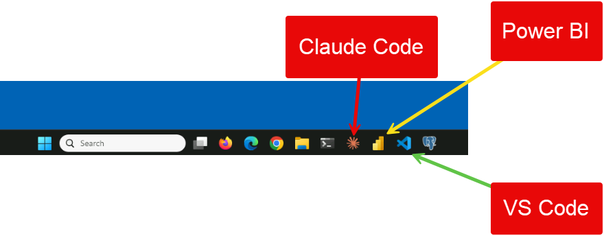
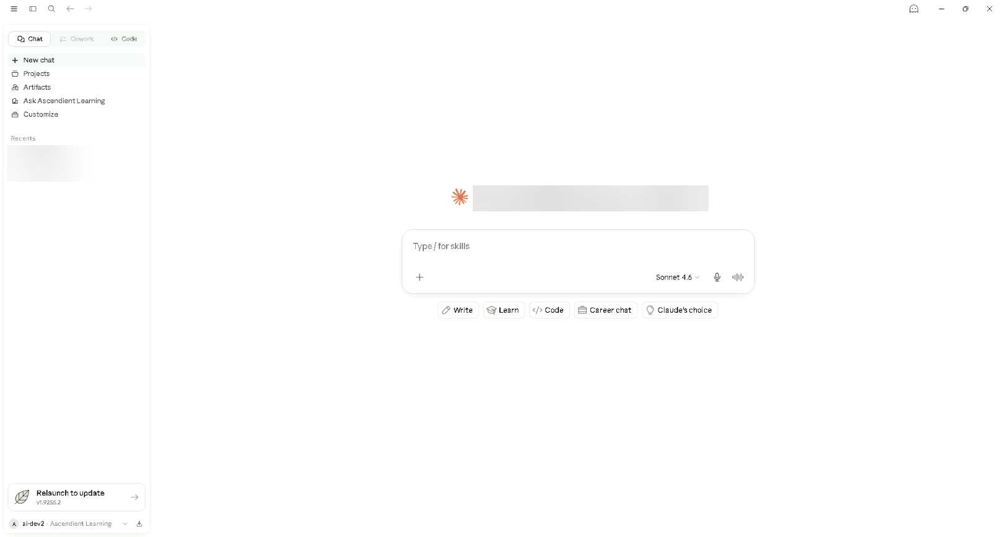
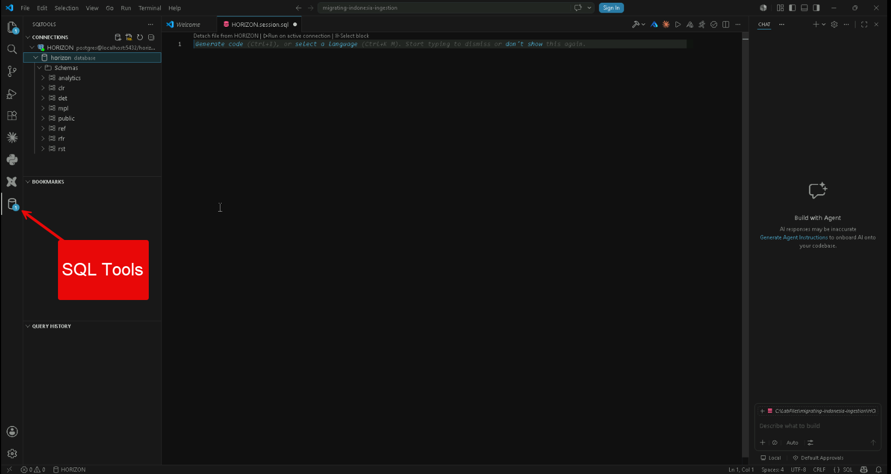

How to use these guides
Five pages: this hub and one guide per session. They're for you, not the students. They aren't linked from the student site and search engines are told to ignore them, but anyone with the link can open them.
- Once: read this hub
Fifteen minutes. The business words, the warehouse, SQL and AI basics that every session leans on. After this, nothing in a session guide should be a new word without an explanation next to it.
- The night before: read each session guide top to bottom
About 18 minutes each. Every guide has the same shape: Understand it (the point, the words, the data drawn with real rows, the traps), Walk the lab (every step: what students do, what they see, what it means, what you say), In class (the minute-by-minute script and the fixes) and Be ready (the dry run, likely questions and a 60-second summary).
- At the keyboard: the dry run
About 15 minutes per session. Do the lab exactly as a student would. Every command and its expected output is written down.
- In class: keep the guide open on a second screen
The In class half of each guide is your script: times, slide numbers, what to say, what the room should see, and what to do when something breaks.
Each section ends with a Back to the point box. Every session has one sentence at its centre, and the guide keeps coming back to it, so you can always answer the question students care about most: why are we doing this?
The four sessions
Four one-hour vendor courses merged into one half-day. Each session has one follow-along lab (you drive, students do every step on their own VM), one theme and one number that carries it.
Mind-reader not included
What you don't say, it makes up.
A six-word question about VEEV in Indonesia. Students add the missing pieces one at a time: real tables, dates, a definition, two business rules. One harmless line returns zero rows.
Prompt Engineering for AnalyticsOpen the guide → Session 2 · WA3900 · 1:05 · GenerateDeepfake data
Realistic is not real.
Plan a fake ("synthetic") Japan customer list on the expensive model, check the plan against the warehouse, have the cheap model type 100 rows, then count what it really made.
Generative Analytics EngineeringOpen the guide → Session 3 · WA3901 · 2:07 · ProveCompared to what?
No baseline, no claim.
A dashboard says VEEV is "20% ahead of plan". There is no plan in the warehouse, and no conversion is tagged to a campaign. "Not testable yet" is the finding.
Evidence-Based ReasoningOpen the guide → Session 4 · WA3902 · 3:00 · JudgeThe dog that didn't bark
Read for what's missing.
A polished AI analysis claims engagement numbers for a product with no device, and "94%" of a population where at most 79.7% could qualify. Validate, caveat or escalate. Then Part 2: every student builds an MCP server and a reviewer agent in Claude Code, and still signs.
AI Judgment & Bias AwarenessOpen the guide →It's the life of one AI-assisted answer: you ask for it (1), you generate with it (2), you prove what it claims (3), and you judge what it left out (4). Sessions 1 and 4 are mirror images: in Session 1 the model fills your silences; in Session 4 you find its silences. Say that at 3:00 and the day feels like one story.
The rule and the game
What it means, in plain words: the AI model writes fast and sounds confident. The warehouse (the database with the real data) is the only thing in the room that knows what's true. And when a number goes to a manager, the analyst's name is on it, not the model's. Say it at 0:09, at every takeaway, and as the last line of the day.
Gut vs Ground Truth, the running game
Before almost every query, students predict the answer in the class chat. Then you run it. If most of the room called it, Gut gets a point. If the data surprised the room, Ground Truth gets a point. Keep score on slide 10 (it remembers between reloads, so reset it before class). About 18 predictions across the day. A wrong public guess is the most memorable thing that happens all day, and it costs nobody anything.
The five takeaways, each welded to one number
| Takeaway | The number students saw with their own eyes |
|---|---|
| 1 · The model only knows what you tell it. | 9 under-25s hid inside a believable count of 63 until the rules were in the prompt (S1). |
| 2 · Realistic is not real. | 73% of Japan's under-25 consent records allow marketing; a plan that copied Italy's rule erased them (S2). |
| 3 · Premium planning, thrifty execution. | 40×: the cheap model's output costs a fortieth of the expensive one's. Plan on the best, type on the cheapest, then count (S2). |
| 4 · Compared to what? | 0 of 116 conversions tagged to a campaign, and no plan table: "20% ahead of plan" can't be tested (S3). |
| 5 · Read for what's missing. | 79.7% is the most of Japan's consumers who could even own a device. The claim said 94% (S4). |
PMI and marketing words
Students use these words without thinking. You'll hear them all day. Each one with a picture and where it shows up.
The company
PMI · smoke-free who and why
Philip Morris International, the tobacco company. Its stated strategy is to move adult smokers from cigarettes to "smoke-free" products; in 2025 those made up about 41.5% of its revenue. Your students are PMI data analysts.
Background only. All class data is fictional ("Project HORIZON").
IQOS · VEEV · ZYN the three products
IQOS: heats tobacco instead of burning it; a device. VEEV: an e-cigarette ("vape"); a device. ZYN: a nicotine pouch held under the lip; no device.
"ZYN is a pouch" matters in Sessions 2 and 4: a pouch can't send device data.
Market · market code a country
PMI calls each country a market. HORIZON has three: JP Japan (mature: the products are well established), IT Italy (mid-adoption), ID Indonesia (early-stage: new, small numbers).
A "Markets Lead" is the manager for one country. They send the requests in Sessions 1 and 2.
Regulator the rule-maker
The government body that oversees nicotine products in a country: MHLW (Japan), AAMS / EU rules (Italy), BPOM (Indonesia).
Explains why marketing rules differ by country. HORIZON's regulatory filings live in rfr.filings.
DI&A · Future Skills · CoP · IDP the programme
DI&A is PMI's data, insights and analytics function. "Future Skills" is the training programme this class belongs to; CoP leads (communities of practice) chose the four courses. IDP is a person's individual development plan.
Slide 2. The Monday moves are meant to go into each person's IDP.
DCA · REEV · DUSI · VAIR… PMI tool names
Names of PMI internal tools and dashboards that students may mention (Session 3's discussion question lists some). You don't need to know what each does: ask the student, "what does it output, and what's it compared to?"
Session 3 debrief. Turn their answer back into the session's question.
The customer journey
Every consumer in HORIZON moves through the same five stages. Marketers call it a funnel because fewer people reach each stage:
- Stage 1registrationsigns up
- Stage 2trialtries the product
- Stage 3conversionswitches for real
- Stage 4aretentionkeeps using it
- Stage 4bchurngives up
Consumer · cohort · segment groups of people
A consumer is one adult customer. A cohort is a group defined by when or how they started (e.g. "everyone who registered in 2025"). A segment is a slice by some trait (e.g. "18-24 year olds").
S2 builds a fake cohort; S4's Italy case is about a segment.
Adoption a loose word
"People starting to use the product." Teams disagree whether that means trying it, buying it or buying it twice. The labs define it as reaching trial or conversion.
ask the room "adoption means trial, conversion or repeat purchase?" and watch it split.
Conversion · conversion rate the moment that matters
A conversion is when a smoker switches to the product. A conversion rate is conversions divided by some group of people or events: 13.5% means 13.5 conversions per 100.
a gym's free-trial visitors who buy a membership.
Retention · churn stay or leave
Retention: still using the product later (HORIZON: 90 days after converting). Churn: stopped. "Retained 65%" means 65 of every 100 converters stayed.
Session 2's real Japan ZYN numbers.
Campaign · attribution did marketing cause it?
A campaign is a marketing push with a start and end date. An event is attributed when it's tagged with the campaign that caused it (campaign_id filled in). Unattributed = no tag (blank).
Session 1's silent zero and Session 3's "0 of 116" are both about blank campaign ids.
Baseline · lift compared to what?
A baseline is what you compare against: a plan, last quarter, or people the campaign didn't reach. Lift is how much better the campaign group did than the baseline. No baseline, no lift.
The whole of Session 3.
Percent vs percentage points two different "ups"
From 13.5% to 21.4% is +7.9 percentage points (subtract) or +59% relative (divide: 21.4 ÷ 13.5 = 1.59). Same data, very different headline. The sin is not saying which.
Session 3's Italy case file.
Consent · marketing permission may we contact them?
A person's yes or no to marketing, recorded per channel (email, SMS, push, post). In HORIZON it's the column marketing_allowed in mpl.consent_records, about 2.5 rows per person.
a drawer of signed permission slips, one per channel.
Age-gate · under-25 rule differs by country
In HORIZON, nobody under 25 (age band 18-24) may be marketed to in Italy or Indonesia: 0% of their under-25 consent records allow it. In Japan, 73% do.
All four sessions. The same rule is right in one market and wrong in another: Session 4's "over-correction" trap.
Sell-through · distributor retail sales
Sell-through is how many units shops actually sold to consumers (as opposed to how many PMI shipped to shops, "sell-in"). A distributor is the wholesaler or retailer in between.
HORIZON's rst.sell_through feed exists, but no lab uses it. Slide 18 warns it's never a source for consent.
Telemetry · engagement device data
Telemetry is data a connected device sends home: sessions, minutes used, firmware version. Engagement is a loose word for "how much people use it". A pouch has no device, so no telemetry.
Sessions 2 and 4: zero ZYN telemetry rows.
KPI · dashboard · insight numbers for managers
A KPI (key performance indicator) is a number a team is judged on. A dashboard shows KPIs. An AI-generated "insight" is a sentence a tool writes about a KPI, like "20% ahead of plan".
Session 3 starts from one of those sentences.
Most of the day's traps hide in these words: "adoption" has no single meaning, "exclude a campaign" forgets the blanks, "ahead of plan" has no plan, "engagement" for a pouch is impossible. The words sound finished; the data says otherwise.
HORIZON, drawn
One fictional PostgreSQL database called horizon, identical on every student VM and on your Mac. Five "data assets" (sources), three markets, data from 1 January 2024 to 31 December 2025.
clr.consumersclr.lifecycle_eventsmpl.consent_recordsrst.sell_throughrst.distributorsdet.device_telemetryrfr.filingsPlus four small reference lists in ref (age bands, campaigns, markets, products) and an empty sandbox folder, analytics, where Session 2 creates its fake table.
| Table | One row = | rows | Used in |
|---|---|---|---|
clr.consumers | one person (market, age band, main product) | 6,000 | S1 · S2 · S3 · S4 |
clr.lifecycle_events | one thing one person did on one day (stage, product, campaign) | 15,597 | S1 · S2 · S3 |
mpl.consent_records | one yes/no to marketing, for one channel | 15,052 | S1 · S2 · S3 · S4 |
det.device_telemetry | one device's usage on one day (sessions, minutes) | 35,113 | S2 · S4 |
ref.age_bands | one age band: 18-24 · 25-34 · 35-44 · 45-54 · 55+ | 5 | S2 |
ref.campaigns | one marketing campaign with its dates | 5 | S3 |
ref.products | one product, and whether it has a device | 3 | S2 |
ref.markets | one country and its stage | 3 | background |
rfr.filings | one regulatory filing and its status | 112 | S2 stretch |
rst.sell_through · rst.distributors | one week of one product's sales at one distributor · one distributor | 2,730 · 12 | not used |
Five facts that bite all day
| Fact | Where it bites |
|---|---|
| People by market: Japan 3,000 · Italy 2,000 · Indonesia 1,000. | Indonesia's numbers are small (dozens a month); Japan's are big. |
| Under-25 marketing: 0% allowed in Italy and Indonesia, 73% in Japan. | S1 (the age-gate), S2 (Japan isn't Italy), S3 (the population), S4 (don't over-correct). |
| Blank campaign ids: 15,523 of 15,597 events have none. Only campaign 1 (Italy IQOS, 74 events) is tagged. Every Indonesia event is blank. | S1's silent zero, S3's "0 of 116". |
| Telemetry is IQOS and VEEV only. About 20% of rows have a blank consumer id on purpose (anonymised). | S2's check D, S4's hallucination and coverage checks. |
| There is no plan or target table. | S3: "ahead of plan" compared to nothing. |
The warehouse is the "Data decides" part of the rule. Students never paste its rows into Claude; they paste only table and column names, then bring Claude's SQL back here to get the real number.
SQL in five minutes
You won't write SQL in class: Claude does. But you need to read it out loud and spot the one line that matters. Here's every piece the labs use.
The shape of every query
A query is a question to the database. It always reads in this order, and each line has one job:
SELECT date_trunc('month', le.event_date)::date AS month, -- 5 · what to show count(DISTINCT le.consumer_id) AS adopters -- (one line per month) FROM clr.lifecycle_events le -- 1 · start from this table JOIN clr.consumers c ON c.consumer_id = le.consumer_id -- 2 · glue on another table WHERE le.market_code = 'ID' -- 3 · keep only these rows AND le.lifecycle_stage IN ('trial', 'conversion') GROUP BY 1 -- 4 · one result line per month ORDER BY 1; -- 6 · sort the result
| Piece | In plain English |
|---|---|
FROM clr.lifecycle_events le | "Start from this table." le is a nickname so later lines can write le.event_date instead of the full name. |
JOIN … ON … | "Glue another table on, matching rows where this column equals that one." Explained below: it can copy rows. |
WHERE … | "Keep only rows where every condition is true." IN ('trial','conversion') means "is one of these". |
GROUP BY 1 | "Squash the rows into one line per value of the first column" (here, per month). |
SELECT … | "Show these columns." AS month just names the column in the result. |
ORDER BY 1 | "Sort by the first column." |
-- comment | Anything after two dashes is a note for humans; the database ignores it. The labs ask Claude to write its assumptions as comments. |
Counting: rows vs different people
count(*) how many rows
Counts every row that survived the WHERE.
count(DISTINCT consumer_id) how many different people
Counts each person once, however many rows they have. Almost every lab number is this.
count(*) FILTER (WHERE …) count some of them
Counts only rows that also meet an extra condition, so one query can show "all" and "after the rule" side by side.
avg(x::int) · round(…, 1) a percentage trick
::int turns true/false into 1/0. The average of 1s and 0s is the share that's true: 0.731 → ×100 → 73.1%. round(…, 1) keeps one decimal.
The join trap: one row becomes several
A join glues a row to every matching row in the other table. One person with three permission slips becomes three rows:
| consumer_id | stage |
|---|---|
| 5855 | trial |
| consumer_id | stage | slip |
|---|---|---|
| 5855 | trial | push |
| 5855 | trial | postal |
| 5855 | trial |
count(*) now says 3; count(DISTINCT consumer_id) still says 1. A LEFT JOIN is the same glue, except rows with no match are kept (with blanks) instead of dropped. Session 3 uses it to keep campaigns that have zero events.
NULL: the blank that isn't false
A blank cell is called NULL and means "unknown". Any comparison with a blank answers "unknown", and WHERE only keeps true. That one rule causes Session 1's silent zero:
| campaign_id | campaign_id <> 4 | kept by WHERE? |
|---|---|---|
| 4 | false | no |
| 1 | true | yes |
| NULL | unknown | no (surprise) |
The fixes: campaign_id IS DISTINCT FROM 4 (treats blank as an ordinary value), or say it explicitly: campaign_id IS NULL OR campaign_id <> 4. To find blanks, write IS NULL; = NULL never matches anything.
Small pieces you'll see
| Piece | Meaning |
|---|---|
date_trunc('month', event_date) · 'quarter' | Round a date down to the start of its month (or quarter), so rows group by month. |
event_date >= '2025-07-01' AND event_date < '2025-10-01' | A "half-open" range: on or after the first date, strictly before the second. Exactly Q3. |
::date · ::int · ::numeric | "Treat this as a date / whole number / decimal." Just a conversion. |
WITH name AS ( … ) | Build a temporary mini-table first, then query it. Lets a long query read as steps. |
bool_or(…) | "True if any of this person's rows matches." Used to flag "ever reached conversion". |
GROUP BY ROLLUP (age_band) | One line per age band, plus a grand-total line (shown as ALL). |
coalesce(x, 'ALL') · nullif(x, 0) | "Use x, or 'ALL' if it's blank." · "Treat 0 as blank" (avoids dividing by zero). |
information_schema.tables · .columns | The database's own list of its tables and columns. S1 uses it to show the real tables; S3 to search for a plan table. |
~* '(plan|target)' | "Contains plan or target, ignoring capitals" (a text pattern match). |
CREATE TABLE · INSERT · DROP TABLE IF EXISTS | Make a new table · put rows in it · delete the table if it's there. Only Session 2 does this, in the analytics sandbox. |
relation "…" does not exist | The error for a table that isn't there ("relation" = table). Session 1, Step 1. |
You'll never need to write these, only read them aloud and point at the line that decides the number. In every session that's one line: the filter on blanks, the rule that removes a group, the denominator. Data decides; you find the line that decided it.
AI in four minutes
The ideas from the deck, in the order they come up. Each with the line to say.
LLM · next token S1 · 0:12
A large language model writes by predicting the next piece of text (a token, about ¾ of a word) and repeating. It continues text; it doesn't look things up.
"It doesn't look things up. It continues text."
Context window S1
Everything the model can see right now: your prompt plus the chat so far. It has never seen HORIZON.
"If it isn't in the prompt, it's a guess."
Temperature · sampling S1
The model picks its next word from a spread of options with some randomness, so the same prompt gives different answers to different people.
"Judge the logic; prove it with a count."
Hallucination S1 · S4
A confident, specific statement that isn't true. Models are trained in a way that rewards guessing over "I don't know".
"Give it a polite way to say 'I'm not sure'."
Grounding · lost in the middle S1
Put the real facts (tables, rules, definitions) in the prompt. Models attend best to the start and the end of a long prompt, so rules go on top and the question goes last.
"Rules on top. Question at the bottom."
Template · chain-of-thought · few-shot S1 · Step 4
Fill-in-the-blank prompts; asking for the plan before the SQL; showing one finished example.
"Do the thinking once. Template it."
Model tiers · prices S2
Anthropic sells three sizes: Opus (premium) $4 in / $20 out per million tokens, Sonnet $2 / $10, Haiku (thrifty) $0.10 / $0.50. Output costs five times input; Haiku's output is 40× cheaper than Opus's.
"Pay for judgment where it's short. Pay pennies for typing where it's long."
Tokens, not tallies S2
When a model prints a summary of the rows it just wrote, that summary is more generated text, not a count. It's often slightly off.
"The warehouse counts. You sign."
Sycophancy S3
Models tend to agree with the user, including abandoning a correct answer when you just say "are you sure?" (Sharma et al., 2024).
"Agreement is not confirmation."
Explanations aren't evidence S3
Anthropic's research found Claude's description of how it solved a sum differs from what it actually computed. A fluent explanation proves nothing.
"An explanation is not evidence."
Context rot S4
Models get less reliable as their input grows (Chroma tested 18 models in 2025; all degraded). Long chats full of old guesses make worse reviewers.
"New task, new chat."
MCP S4 Part 2
Model Context Protocol: an open standard for plugging tools and data into an AI app, "a USB-C port for AI". In Session 4 Part 2, students build a read-only MCP server over HORIZON with Claude Code.
"MCP gives it eyes. It doesn't give it judgment."
Every AI idea in the day explains one half of the rule: AI answers (fluently, from whatever it was given). The labs supply the other two halves.
The tools on the VM
Students use two apps all day on a Windows virtual machine (VM). Everything is installed; shortcuts are on the taskbar. There is no Claude Code: just the Claude Desktop chat app.



| How do I… | Do this |
|---|---|
| start a clean conversation | Claude Desktop → New chat. Do it whenever a guide says "new chat": old guesses in the window leak into new answers. |
| switch model (Opus, Sonnet, Haiku) | Click the model name next to the send button and pick one. It applies from the next message. The VM may show older versions (e.g. Sonnet 4.6); the lesson is the same. |
| copy Claude's SQL | Hover the code block → Copy. If it opened a side panel ("artifact"), use the panel's Copy, or reply "Put it in a code block in the chat." |
| stop Claude making a Word file | Every prompt ends with "Respond in Markdown only — do not create a Word document or any file." |
| connect to the warehouse | VS Code → SQLTools sidebar (database icon) → right-click HORIZON → Connect. Missing? Add a PostgreSQL connection: localhost · 5432 · horizon · postgres · Horizon!Lab2026. |
| get somewhere to paste SQL | Right-click HORIZON → New SQL File. |
| run a query | Click inside it and press Ctrl+E Ctrl+E (or "Run on active connection" above it). For a multi-statement script (Session 2), select all with Ctrl+A first. |
| know the setup works | Run SELECT count(*) FROM clr.lifecycle_events; → 15597. Everyone types it in the chat at 0:02. |
Everything pasted into an AI tool leaves the company's data boundary. Table names, column names, rules and definitions: yes. Real consumer rows, passwords, connection strings: never. No prompt in the labs pastes a data row.
The tools are deliberately separate: Claude can't touch the data, so students carry every query across by hand and read every number themselves. That's "you sign", built into the setup. Session 4 Part 2 shows what happens when the model gets its own door, and why the rules go in the door.
Your Mac's warehouse
Your Mac runs the same warehouse as the VMs, in Docker. Students never see it. You use it to rehearse, to show results if a VM misbehaves, and for Session 4 Part 2 (make mcp-lab-check proves the reference MCP server).
cd ~/pmidataanalyst/horizon-warehouse make help # every command make status # which warehouse is running, on which port make up # start it (first start loads the data, about 20 seconds) make verify # print every number quoted in the labs and slides make before-class # the morning of class: fresh rebuild + every number checked make s1 # run a session's queries with expected results (s1 … s4) make s2-reset # drop Session 2's fake tables (between runs) make s2-fallback # load a ready-made Session 2 table if Claude's script won't run make mcp-lab-check # Session 4 Part 2: the reference MCP server, its tool definitions, 7 checks make psql # a SQL prompt in Terminal (\q to leave)
Your Data Engineer warehouse (~/pmidataeng, container horizon-db) holds identical data on the same port, so SQLTools, psql and the MCP server give the same numbers on either. But the make commands above only talk to this class's container, horizon-analyst-db. If make status shows horizon-db on 5432, run make takeover first (it stops the other one and keeps its data); make handback switches back afterwards.
The morning of class
Where everything lives
| You want | Open |
|---|---|
| The student lab guides (what students follow) | the student site · S1 · S2 · S3 · S4 · glossary |
| The deck you present (90 slides) | ~/pmidataanalyst/deck/PMI_DataAnalyst_FutureSkills_Full_Deck.html |
| The playbook: question bank, links with timing, draw.io sketches | ~/pmidataanalyst/playbook/PMI_DataAnalyst_4hr_Instructor_Playbook.html |
| Every query with its expected number | ~/pmidataanalyst/horizon-warehouse/sql/ |
| Session 4 Part 2: the reference MCP server, its check and the agent template | ~/pmidataanalyst/horizon-warehouse/mcp-lab/ (and the Session 4 guide). The old instructor-only demo runbook is still in mcp/DEMO_session4_mcp.md. |
Every number, one card
Know these and you can answer almost any "is that right?" in the room.
And the last line of the day: "Earlier today, a generated face fooled some of you. Just now, a generated number didn't."